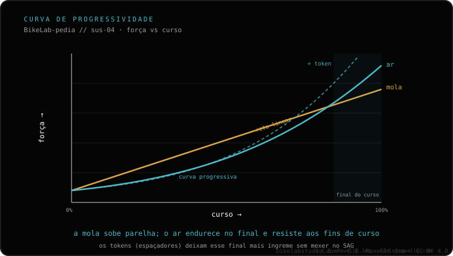

Com pouco orçamento, priorize uma mola de ar (você ajusta ao seu peso) e um cartucho selado acima da mola de precarga com elastômero. Os garfos baratos de mola/elastômero quase não se ajustam e ficam duros. Se estiver em dúvida entre ar e mola, veja ar vs mola; e para ajustar o ar ao seu peso, a pressão por peso.
"Custo-benefício" não significa "qualquer garfo com mola". O melhor barato é o que você consegue ajustar a você: ar regulável e um damper que sele, não uma mola fixa.
Mola de ar antes da mola de elastômero. O ar você ajusta ao seu peso com uma bomba: mais sensível e com mais sensação de "o seu" garfo. Os garfos baratos de mola ou elastômero trazem uma precarga quase fixa que quase não se regula, então para muitos ciclistas ficam duros ou sem curso útil.
Cartucho selado de amortecimento. Um damper selado controla o rebote e a compressão e aguenta melhor o uso do que um sistema aberto barato. É o que evita que o garfo "pule como cama elástica".
O curso correto. Mesmo sendo custo-benefício, ele deve ter o curso que a sua disciplina pede: XC 80-120, trail 120-140 mm. De nada adianta economizar e montar um curso que o seu quadro não admite; veja quanto curso você pode colocar.

O grande problema do garfo barato de mola é o ajuste: ele vem calibrado para um peso "médio" e, se você não é esse peso, fica duro (não afunda) ou mole (vai ao fim). O ar resolve isso com uma bomba: você sobe ou baixa a pressão até o seu peso e consegue sensibilidade real. Por isso, entre dois garfos custo-benefício, o de ar com cartucho selado quase sempre vale mais a pena. Compare o fundo em ar vs mola.
Conte sua disciplina, peso e quanto quer gastar e dizemos qual garfo de ar encaixa. Fale com a gente no WhatsApp
Mola de ar (ajustável ao seu peso) e cartucho selado, acima da mola de precarga com elastômero.
Ar. Os baratos de mola ou elastômero quase não se ajustam e ficam duros; com ar você regula ao seu peso.
Sim, se você escolher ar com cartucho selado no curso que a sua disciplina pede. O importante é o sistema, não só a marca.